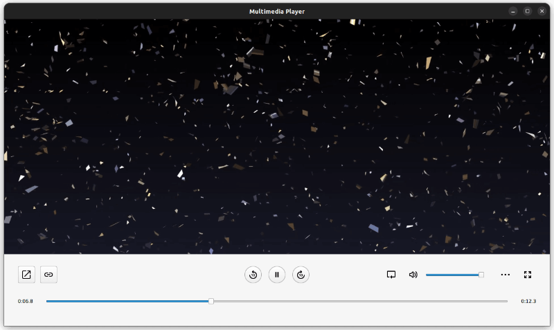
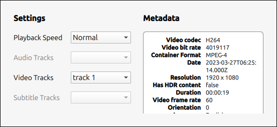

QML Media Player Example
Playing audio and video using the QML MediaPlayer type.

This example demonstrates a simple multimedia player that can play audio and video files using various codecs.
Running the Example
To run the example from Qt Creator, open the Welcome mode and select the example from Examples. For more information, see Qt Creator: Tutorial: Build and run.
Instantiating the MediaPlayer
The entry point for the QML code in this example is Main.qml. Here an ApplicationWindow is created and properties such as the id, title, width and height are set.
ApplicationWindow { id: root title: qsTr("Multimedia Player") width: 1280 height: 720
Next the MediaPlayer is created and the two properties that are responsible for the video and audio output are defined. Firstly, videoOutput which renders the video viewfinder and secondly audioOutput which provides the audio output for the player.
MediaPlayer { id: mediaPlayer ... videoOutput: videoOutput audioOutput: AudioOutput { id: audio muted: playbackController.muted volume: playbackController.volume } ... VideoOutput { id: videoOutput anchors.fill: parent visible: mediaPlayer.mediaStatus > 0 TapHandler { onDoubleTapped: { root.fullScreen ? root.showNormal() : root.showFullScreen() root.fullScreen = !root.fullScreen } } }
The visible property of the VideoOutput type is set to true when the mediaStatus property of the MediaPlayer is greater than 0. mediaStatus is of enumeration type and is equal to 0 when No media has been set, and greater than 0 otherwise. Therefore, the VideoOutput is visible when media has been set.
The MediaPlayer type has a signal property called onErrorOccurred that can be overridden specifically to handle errors. In this case the signal opens a MessageDialog using the method open() and sets its text property to a MediaPlayer property called errorString.
onErrorOccurred: { mediaError.text = mediaPlayer.errorString mediaError.open() }
Playback Controls
In order to have a useable media player, there needs to be an interface to control the playback. This is created in its own component file, PlaybackControl.qml, and instantiated in Main.qml.
PlaybackControl { id: playbackController ... onTracksChanged: { audioTracksInfo.read(mediaPlayer.audioTracks) videoTracksInfo.read(mediaPlayer.videoTracks) subtitleTracksInfo.read(mediaPlayer.subtitleTracks, 6) /* QMediaMetaData::Language = 6 */ updateMetadata() mediaPlayer.play() }
When created, objects are forwarded to this type such as track information, metadata information and the MediaPlayer object itself. In PlaybackControl.qml, each one of these objects have a required property, meaning that these properties must be set when the PlaybackControl object is created.
Item { id: playbackController required property MediaPlayer mediaPlayer required property MetadataInfo metadataInfo required property TracksInfo audioTracksInfo required property TracksInfo videoTracksInfo required property TracksInfo subtitleTracksInfo
These playback controls can be broken down into sections. In the top left of the panel lies a collection of buttons used to open a file, either by selecting a file from a file explorer or entering a URL. The file is loaded into the MediaPlayer by setting the source property. Both buttons are instantiated using a CustomButton custom component.
CustomButton { id: fileDialogButton icon.source: "../images/open_new.svg" flat: false onClicked: fileDialog.open() } CustomButton { id: openUrlButton icon.source: "../images/link.svg" flat: false onClicked: urlPopup.open() }
Three buttons are created and centered on this panel, handling play, pause and seeking ten seconds backwards or forwards. The media is played and paused using the methods play() and pause(), respectively. To know when to draw a play or pause button, the playbackState property is queried. For example, when it is equal to the enum value MediaPlayer.PlayingState then the pause button is drawn.
CustomRoundButton { id: playButton visible: playbackController.mediaPlayer.playbackState !== MediaPlayer.PlayingState icon.source: "../images/play_symbol.svg" onClicked: playbackController.mediaPlayer.play() } CustomRoundButton { id: pauseButton visible: playbackController.mediaPlayer.playbackState === MediaPlayer.PlayingState icon.source: "../images/pause_symbol.svg" onClicked: playbackController.mediaPlayer.pause() }
To navigate ten seconds forward or backwards, the position of the MediaPlayer type is incremented by 10,000 milliseconds and set using the method setPosition().
CustomRoundButton { id: forward10Button icon.source: "../images/forward10.svg" onClicked: { const pos = Math.min(playbackController.mediaPlayer.duration, playbackController.mediaPlayer.position + 10000) playbackController.mediaPlayer.setPosition(pos) } }
Playback Seeking and Audio
In PlaybackControl.qml, an AudioControl and a PlaybackSeekControl type are instantiated. These are both defined in their own component file and are responsible for volume control and playback seeking, respectively. The AudioControl type defines a button to mute and a Slider, from QtQuick Controls, to set the volume of the player. Both of these attributes are exposed by defining a mute and volume property and are accessed from the AudioOutput definition in Main.qml.
property alias muted: muteButton.checked property real volume: slider.value
The PlaybackSeekControl uses a RowLayout containing a Slider with a Text item either side. The two Text items display the current time and the remaining time of the media being played. These are both calculated using two properties of the MediaPlayer type, position, which gives the current playback position in milliseconds, and duration, which gives the duration of the media in milliseconds.
Text { id: currentTime Layout.preferredWidth: 45 text: seekController.formatToMinutes(seekController.mediaPlayer.position) horizontalAlignment: Text.AlignLeft font.pixelSize: 11 } ... Text { id: remainingTime Layout.preferredWidth: 45 text: seekController.formatToMinutes(seekController.mediaPlayer.duration - seekController.mediaPlayer.position) horizontalAlignment: Text.AlignRight font.pixelSize: 11 }
The Slider is only enabled when the media player is seekable and not, for example, live media. The MediaPlayer type has a property for this called seekable. The value of the Slider is calculated using the position and duration properties of the MediaPlayer.
enabled: seekController.mediaPlayer.seekable value: seekController.mediaPlayer.position / seekController.mediaPlayer.duration
Metadata and Track Information
The PlaybackControl type instantiates a SettingsPopup, which contains information about the metadata of the currently loaded media and track selection, as well as the ability to update the playback rate. This Popup is defined in SettingsPopup.qml.

The metadata is contained in its own component file, MetadataInfo.qml. It contains a ListModel, a function to clear it, clear(), and a function to populate it, read(MediaMetadata metadata). The read(MediaMetadata metadata) function takes as a parameter an object of type MediaMetaData, and navigates its key-value structure to extract its data into the model of the ListView. The methods used to do this are keys(), which returns all the keys of the MediaMetaData, and {stringValue(Key key)}, which returns the value for a given key.
function read(metadata) { if (!metadata) return for (const key of metadata.keys()) if (metadata.stringValue(key)) listModel.append({ name: metadata.metaDataKeyToString(key), value: metadata.stringValue(key) }) } ListModel { id: listModel }
The data is then displayed in SettingsPopup.qml in a ListView type. The delegate of this ListView is a row of two Text items, corresponding to the key-value pairs abstracted from the MediaMetaData item.
On the other side of the Popup there is playback rate controls and track selection for audio, video and subtitles. The playback rate is chosen from a ComboBox and set using the property playbackRate.
settingsController.mediaPlayer.playbackRate = (currentIndex + 1) * 0.25
The type called TracksInfo, defined in TracksInfo.qml, contains the data about the tracks. More specifically, a ListModel containing the titles of the tracks, or for subtitles specifically, the langauges. This information is populated in Main.qml by calling the read(MediaMetadata mediaMetadata) function defined in the TracksInfo type.
onTracksChanged: { audioTracksInfo.read(mediaPlayer.audioTracks) videoTracksInfo.read(mediaPlayer.videoTracks) subtitleTracksInfo.read(mediaPlayer.subtitleTracks, 6) /* QMediaMetaData::Language = 6 */ updateMetadata() mediaPlayer.play() }
The model defined in TracksInfo is then queried in the ComboBoxes in the SettingsPopup to select the current track.
settingsController.mediaPlayer.pause() tracksInfo.selectedTrack = currentIndex settingsController.mediaPlayer.play()